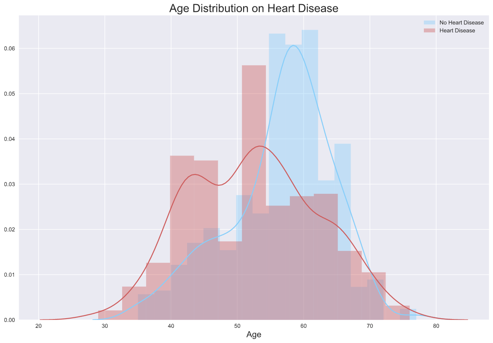

Visualizations & Insights
1. Age Distribution on Patients

- Distribusi umur pada pasien yang mengalami penyakit jantung berada pada rentang umur 20 hingga 80, namun paling banyak berada pada sekitar umur 54
- Distribusi umur pada pasien yang tidak mengalami penyakit jantung berada pada rentang umur 30 hingga 80, namun paling banyak berada pada sekitar umur 55 hingga 62
Plot di atas membuktikan bahwa mitos 'penyakit jantung hanya terjadi pada lansia' tidaklah benar.
2. Cholesterol Type on Patients
Dalam pasien yang mempunyai penyakit jantung, pada golongan pasien bertipe kolesterol sangat tinggi dengan batas bawah 190 dan batas atas sekitar 330, namun terdapat pasien yang mempunyai kolesterol very high yakni sekitar 560 dan kemungkinan pasien tersebut adalah pasien yang obesitas
3. Cholesterol & Resting Blood Pressure on Patients
- Salah satu pasien yang memiliki kolesterol tinggi mempunyai penyakit jantung, walaupun bertekanan darah normal (<120mm/Hg atau millimeters of mercury)
- Pasien yang mempunyai penyakit jantung tersebar tidak terarah, yang artinya pasien bisa saja mempunyai penyakit jantung walaupun pasien tersebut mempunyai kolesterol yang rendah dan tekanan darah yang normal
4. Fasting Blood Sugar on Patients
- Jumlah pasien yang bergula darah rendah atau di bawah 120mg/dl (milligram per deciliter) yang mempunyai penyakit jantung lebih banyak, yakni 455 pasien, dibandingkan dengan pasien tidak mempunyai penyakit jantung, yakni 417 pasien
- Jumlah pasien yang memiliki penyakit jantung dan bergula darah rendah lebih tinggi dibandingkan jumlah pasien yang memiliki penyakit jantung dan bergula darah tinggi
5. Max Heart Rate & Resting Blood Pressure on Patients
- Terdapat pasien bertekanan darah dan maksimum detak jantung yang tinggi, namun tidak mempunyai penyakit jantung
- Terdapat pasien bertekanan darah rendah dengan maksimum detak jantung di rata-rata (149), akan tetapi pasien tersebut mempunyai penyakit jantung
- Dari plot di atas dapat dilihat pola persebarannya, yakni pasien yang mempunyai penyakit jantung cenderung memiliki maksimum detak jantung yang tinggi
Is there any solution?
Jika dilihat dari plot nomor 5, diketahui bahwa pasien yang mempunyai penyakit jantung cenderung berdetak jantung tinggi, maka disarankan untuk menghindari beberapa faktor pemicu detak jantung tinggi, diantaranya stress atau cemas, terlalu banyak konsumsi kafein atau minuman beralkohol, efek samping obat dan kebiasaan merokok.
Penanganan detak jantung tinggi disesuaikan dengan faktor penyebabnya. Pada sebagian kasus, detak jantung tinggi dapat melambat hanya dengan dibantu beberapa gerakan sederhana seperti Vagal Maneuver. Namun, jika tindakan tersebut tidak berhasil, maka dokter kemungkinan akan memberikan suntikan berisi obat antiaritmia atau obat-obatan lain untuk menormalkan detak jantung.